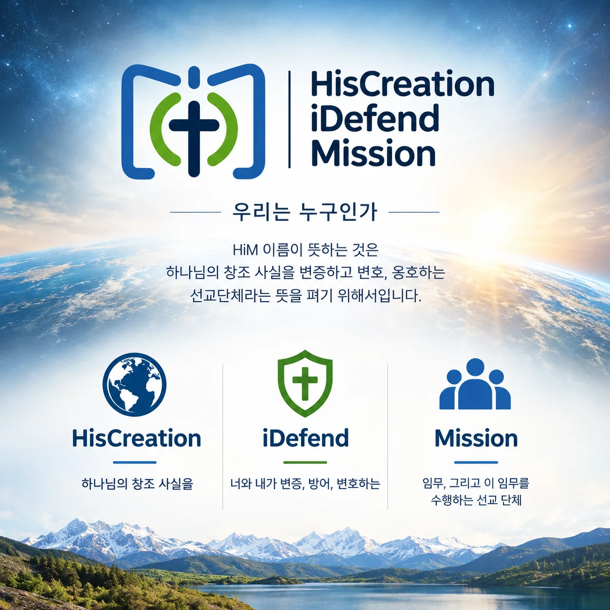
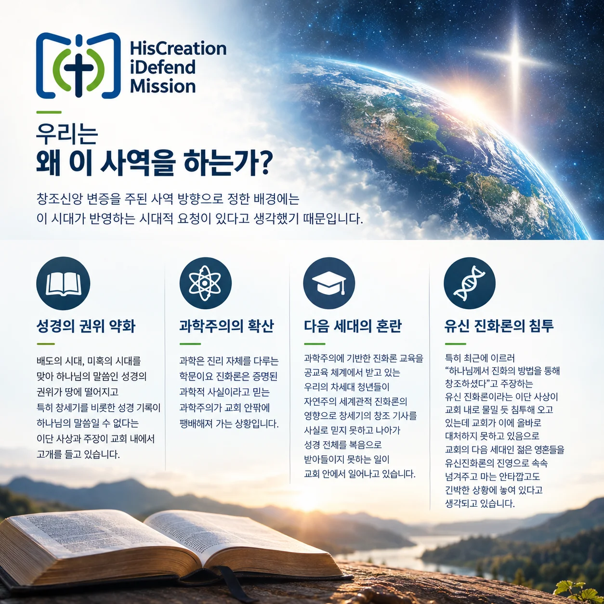
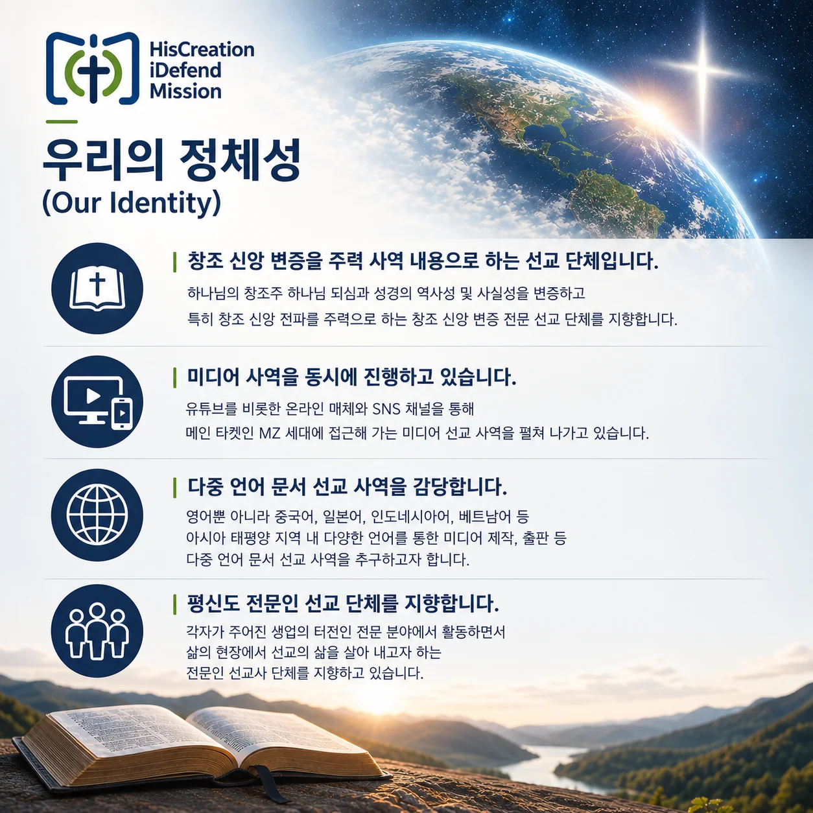
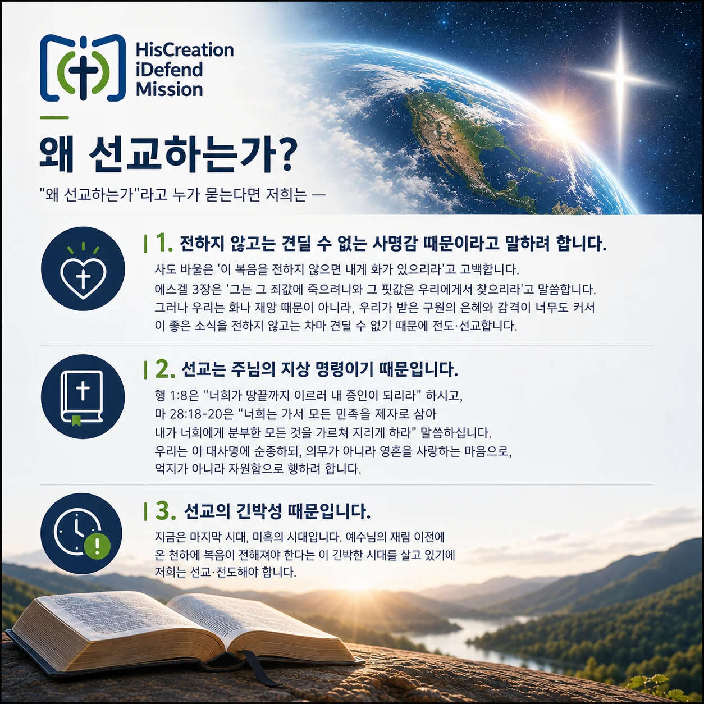

HiM 선교회About HisCreation iDefend Mission (HiM)
130여 년 전, 한 알의 밀알처럼 조선 땅에 떨어진 한 선교사의 헌신이 오늘 이 사역의 뿌리가 되었습니다.Over 130 years ago, the devotion of one missionary fell like a single grain into Korean soil — and became the root of this ministry today.




HiM 선교회Who We Are
선교회의 이름을 HiM (HisCreation iDefend Mission)으로 지은 것은 하나님의 창조 사실을 변증하고 변호, 옹호하는 선교단체라는 뜻을 펴기 위해서입니다.
이런 뜻을 담았습니다.
Our name, HiM (HisCreation iDefend Mission), declares who we are: a mission that defends and upholds the truth of God's creation.
창조신앙 변증을 주된 사역 방향으로 정한 배경에는 이 시대가 반영하는 시대적 요청이 있다고 생각했기 때문입니다.
We chose to focus on defending the creation faith because of what this age demands of the church.
HiM 선교회는 —
창조 신앙 변증을 주력 사역 내용으로 하는 선교 단체입니다. 하나님의 창조주 하나님 되심과 성경의 역사성 및 사실성을 변증하고 특히 창조 신앙 전파를 주력으로 하는 창조 신앙 변증 전문 선교 단체를 지향합니다.
미디어 사역을 동시에 진행하고 있습니다. 유튜브를 비롯한 온라인 매체와 SNS 채널을 통해 메인 타겟인 MZ 세대에 접근해 가는 미디어 선교 사역을 펼쳐 나가고 있습니다.
다중 언어 문서 선교 사역을 감당합니다. 영어뿐 아니라 중국어, 일본어, 인도네시아어, 베트남어 등 아시아 태평양 지역 내 다양한 언어를 통한 미디어 제작, 출판 등 다중 언어 문서 선교 사역을 추구하고자 합니다.
평신도 전문인 선교 단체를 지향합니다. 각자가 주어진 생업의 터전인 전문 분야에서 활동하면서 삶의 현장에서 선교의 삶을 살아 내고자 하는 전문인 선교사 단체를 지향하고 있습니다.
HiM is —
A mission devoted to defending the creation faith. We defend the historicity and truth of Scripture and God's role as Creator, with creation-faith outreach as our core focus.
A media mission. We reach the MZ generation through YouTube and other online and social channels.
A multilingual document mission. Beyond English, we produce and publish media in Chinese, Japanese, Indonesian, Vietnamese, and other Asia-Pacific languages.
A lay professional mission. Our members live out their calling as missionaries within their own professional fields.
"왜 선교하는가"라고 누가 묻는다면 저희는 —
1. 전하지 않고는 견딜 수 없는 사명감 때문이라고 말하려 합니다. 사도 바울은 '이 복음을 전하지 않으면 내게 화가 있으리라'고 고백합니다. 에스겔 3장은 '그는 그 죄값에 죽으려니와 그 핏값은 우리에게서 찾으리라'고 말씀합니다. 그러나 우리는 화나 재앙 때문이 아니라, 우리가 받은 구원의 은혜와 감격이 너무도 커서 이 좋은 소식을 전하지 않고는 차마 견딜 수 없기 때문에 전도·선교합니다.
2. 선교는 주님의 지상 명령이기 때문입니다. 행 1:8은 "너희가 땅끝까지 이르러 내 증인이 되리라" 하시고, 마 28:18-20은 "너희는 가서 모든 민족을 제자로 삼아 내가 너희에게 분부한 모든 것을 가르쳐 지키게 하라" 말씀하십니다. 우리는 이 대사명에 순종하되, 의무가 아니라 영혼을 사랑하는 마음으로, 억지가 아니라 자원함으로 행하려 합니다.
3. 선교의 긴박성 때문입니다. 지금은 마지막 시대, 미혹의 시대입니다. 예수님의 재림 이전에 온 천하에 복음이 전해져야 한다는 이 긴박한 시대를 살고 있기에 저희는 선교·전도해야 합니다.
If asked why we serve in mission, we would say —
1. Because we cannot bear to stay silent. Not out of fear of judgment, but because the grace of our own salvation is too great to keep to ourselves.
2. Because mission is the Lord's Great Commission. We obey it not as a burden but out of love for souls, freely and willingly.
3. Because of the urgency of the hour. We believe we are living in the last days, when the gospel must reach all nations before Christ returns.
연혁Short History
선교회가 처음 만들어진 2019년부터 사용한 이름은 Joseph Davies Memorial Association Inc., 조셉 데이비스 메모리얼 선교법인입니다.
Joseph Davies Memorial Association Inc.는 120년 전, 조선 땅에 뿌려진 한 알의 밀알인 조셉 헨리 데이비스 선교사 Joseph Henry Davies (1856~1890)를 기념하고, 온 족속을 제자 삼아 예수 그리스도의 가르침을 전하는 선교의 사명을 감당하기 위해 호주 브리즈번에 세워진 선교단체 법인(Incorporated Association)입니다. 우리가 은혜로 받은 값진 복음의 이면에 있는 귀한 이름, 그 이름을 딴 선교회가 호주 땅에 하나쯤 있어도 좋겠다는 생각을 했었습니다.
지금으로부터 120여 년 전인 1889년 10월에 은둔의 땅, 조선에 첫 발을 내디딘 호주 출신의 조셉 헨리 데이비스 선교사님이 한국 기독교 역사에서 적지 않은 비중을 차지하고 우리 한국 기독교인 사이에서 길이 기억되고 있는 이유는, 본인이 그토록 사역하기를 열망하였던 조선 나라에 도착한 직후에 너무도 갑작스럽게 돌아가신 그 안타까운 사실에 있습니다.
호주 교회가 조선에 처음 파송한 선교사인 조셉 헨리 데이비스 선교사님은 조선 땅을 밟은 지 6개월 만에 본인이 자원하여 선교 사역지로 정한 부산으로 도보로 여행을 하시다가 목적지 부산에 도착한 그 다음 날인 1890년 4월 5일에 여행 길에서 생긴 수두와 폐렴이 여독과 겹쳐 하루만에 급작스럽게 돌아가심으로써 조선 땅에 한 알의 밀알로 심겨진 순교자로 남게 되었습니다.
더욱 극적인 것은 데이비스 선교사가 조선 땅에서 불의의 병으로 쓰러져 죽은 그 순교적인 죽음에 고무된 호주 빅토리아 주 장로교회와 이후의 호주 장로교단 교회들이 데이비스 선교사의 조선에 대한 선교 열정을 이어받아 해방 전후로 해서 무려 126명이나 되는 호주 선교사들을 파송함으로써 조선 땅, 그 중에서도 경남 지방의 복음화에 앞장서게 된 역사적 사실입니다. 진실로 한 알의 밀알이 이 땅에 떨어져 열 배, 스무 배 그리고 여러 백 배의 결실을 맺는 역사가 이루어진 것입니다.
이런 데이비스 선교사님의 선교사역에 대한 헌신을 계승하고 나아가 '온 족속으로 제자를 삼아 가르치라'는 예수님의 거룩한 선교 명령에 순종하기 위해 지난 2019년 2월에 — 조셉 데이비스 선교사의 조국인 호주 나라 곧, 저희 한국 사람들이 복음의 빚을 지고 있고 또한 저희가 교민으로 살고 있는 이 호주 땅의 현지 복음화를 위하여 조셉 헨리 데이비스 메모리얼 선교 단체 Joseph H. Davies Memorial Mission Association (Unincorporated Association)가 호주 브리즈번에 설립된 바 있습니다.
8년 전, 이 땅에 조셉 데이비스 선교사의 이름을 이어받은 선교 단체를 설립했던 목적은 '온 족속을 제자 삼아 예수 그리스도의 복음을 전하는 전도와 선교'의 사명을 감당하기 위함이었습니다. 조셉 데이비스 기념 선교회는 특히 호주 현지에 나와 있는 교민으로서, 그리고 전 세계에 흩어져 살아가고 있는 한인 디아스포라 커뮤니티 내의 성도들로서 — '나가 있는 선교사'에 의한 현지 전도·선교를 본 선교회의 사역의 주된 방향으로 삼고자 하는 비전을 가지고 선교 사역을 호주 땅 내에서 펼치기로 하였습니다.
이에 따라, 조셉 데이비스 기념 선교법인은 디아스포라 거주 현지의 복음화 사역을 중심으로 문서 선교 및 디지털 미디어 선교를 중점 사역으로 구상하였으며 이에 부대하여 아래와 같은 몇 가지 전문사역들을 함께 수행해 나가고자 애쓴 바 있습니다.
1) 문서 선교 및 디지털 선교 사역
2) 리서치 전문 사역
3) 비즈니스 선교 사역
4) 국내외 선교사 지원 사역
HiM began in 2019 as Joseph Davies Memorial Association Inc., named for Rev. Joseph Henry Davies (1856–1890), the first Australian missionary to Korea, who died of smallpox and pneumonia on April 5, 1890 — just six months after arriving, and one day after finally reaching Busan on foot. Moved by his death, the Presbyterian Church of Victoria and later Australian Presbyterian churches sent 126 missionaries to Korea, especially the Gyeongnam region — a single grain that bore tenfold, twentyfold, and a hundredfold harvest.
In February 2019, to carry forward his devotion and obey Christ's command to make disciples of all nations, Korean-Australian Christians established the Joseph H. Davies Memorial Mission Association in Brisbane — to evangelise the very land where they now live as immigrants, and to whom they owe a debt of gospel gratitude.
The founding vision centred on document and digital mission carried out by "missionaries already living locally" within the diaspora, alongside research mission (mission-field white papers and video resources), business mission (multilingual publishing and mission-business incubation), and support networks for missionaries at home and abroad — including the Kominet online network and a rest-home network for missionaries and retired pastors.
현대 사회가 직면한 선교 사역의 다양성이라는 주제 안에서 고민하던 조셉 데이비스 기념 선교회는 2024년 "시드니 교민을 위한 창조 신앙 부흥회" 개최를 기점으로 창조 신앙 변증 전문 단체로 거듭나기로 결정하게 되었습니다. 이에 따라 선교회의 명칭을 Joseph Davies의 첫 글자를 딴 JD Media 선교회로 변경함과 동시에 미디어 선교 전문단체를 지향하는 '선택과 집중'의 전략 방향을 채택하기로 하였습니다.
위 각 사항에 부응하는 선교 단체로 자리 매김할 수 있도록 나름 애를 써 왔습니다.
이에 따라, JD Media 선교회는 지난 기간 동안 YouTube 영상 제작 등을 통한 미디어 선교, 해외 창조과학 선교 네트웍 개발, 창조 신앙 전파를 위한 각종 창조 과학 캠프, 창조 과학 세미나 개최, 성경적 대홍수 증거 필드 탐사 등 창조 신앙 전파 사역에 나름 힘써 오다가 2026년 7월, 선교사 영입 확대를 기점으로 선교회 명칭을 HisCreation iDefend Mission으로 개칭하기에 이르렀습니다.
In 2024, following a creation-faith revival gathering for the Sydney Korean community, the mission chose to specialise in defending the creation faith and was renamed JD Media Mission — a "focus and concentrate" strategy centred on document, digital, and research mission; local evangelism led by missionaries already on the ground; a cooperative, missionary-run structure; self-sustaining business mission; and lay-professional mission.
Through YouTube production, overseas Creation Science networks, creation camps, seminars, and biblical flood-evidence field expeditions, the mission grew until, in July 2026, expanding missionary recruitment led to a further renaming: HisCreation iDefend Mission.
HiM 선교회는 아래와 같은 단체의 가치를 추구해 나가고자 모인 선교사들의 모임입니다.
1. HiM 선교회는 문서 선교, 디지털 선교를 위한 선교 단체입니다.
문서 선교, 디지털 선교, 리서치 선교를 감당하기 위해 창조지 번역 출판과 기타 기독교 관련 서적의 다중 언어 번역 출판을 위한 '산물 – Living Waters' 출판사를 한국 내에서 운영하고 있으며, 인니어, 캄보디아어, 베트남어, 라오스어, 일본어, 중국어 등 동남아 각국의 다양한 언어 번역에 의한 복음전도 동영상 그리고 USB 등 각종 디지털 전도매체 제작·보급·발간 사역을 추진해 나가는 '멀티 링구얼 선교연구원'을 운영하고 있습니다.
2. HiM 선교회는 디아스포라로 이미 현지에 '나가 있는 선교사'에 의한 현지 선교를 우선으로 하는 선교 단체입니다.
한인 디아스포라 교회 성도의 선교 마인드 고취를 통하여 '현지에 가 있는 선교사'에 의한 도시 복음 선교, 곧 '문지방 선교'를 우선으로 해 나가고자 하는 선교회입니다.
3. HiM 선교회는 평신도 전문인 선교를 핵심 사역으로 하는 선교회입니다.
전문 지식과 전문 기술, 그리고 해외 생활의 오랜 경험을 고루 갖춘 해외 교민 평신도의 선교 마인드를 고취하여 이들을 '이미 나가 있는 선교사'로 동원하는 한인 디아스포라 네트웍 개발 사업을 전개해 나가는 선교회입니다.
HiM is a community of missionaries gathered around three shared values.
1. A document and digital mission. We run the "Living Waters" publishing house in Korea, producing NIV, KJV, and ESV Bible translations and multilingual Christian literature, alongside a Multilingual Mission Research Institute producing gospel videos and digital media in Indonesian, Cambodian, Vietnamese, Lao, Japanese, and Chinese.
2. A mission that prioritises local evangelism by "missionaries already on the ground." We equip Korean diaspora believers already living abroad to lead urban, "threshold" evangelism where they live.
3. A mission built on lay professionals. We mobilise overseas Korean lay believers — with their professional expertise and years of experience abroad — as missionaries already positioned in the field, through an ongoing diaspora network initiative.
하는 일What We Do
HiM은 미디어·교육·차세대·선교의 네 방향으로 창조 신앙을 전합니다.HiM carries the creation faith forward through media, education, next-generation, and outreach ministry.
유튜브 등 미디어 환경에서 창조 사실을 알리고 진화론의 허구성을 알리는 일Making the truth of creation known — and exposing the fiction of evolution — across YouTube and other media.
진화론적 세계관이 주된 패러다임으로 등장하고 있는 현실 속에서 교육을 통해 창조신앙을 회복하고 부흥하는 일Restoring and reviving the creation faith through education, in a world shaped by an evolutionary worldview.
유·초등, 중·고등, 대학청년 등 다음 세대를 창조신앙으로 바르게 세워 나가는 일에 교회와 학교, 선교단체와 협력하는 일Partnering with churches, schools, and mission bodies to ground the next generation in the creation faith.
아시아, 태평양 지역 선교 대상 지역에 창조과학 전문인 선교사 파송을 추진하고 네트웍을 만들어 나가는 일Sending creation-science professional missionaries across Asia-Pacific and building the network to support them.
| 구분Area | 중점 내용Focus | 세부 내용Details |
|---|---|---|
| 문서/미디어 사역IT / Media | 유튜브 등 미디어 환경에서 창조 사실을 알리고 진화론의 허구성을 알리는 일.Making the truth of creation known across YouTube and other media. |
|
| 교육사역Education | 진화론적 세계관이 주된 패러다임으로 등장하고 있는 현실 속에서 창조신앙을 회복하고 부흥하는 일.Restoring and reviving the creation faith in a world shaped by evolutionary thought. |
|
| 차세대사역Next Generation | 유·초등, 중·고등, 대학청년 등 다음 세대를 창조신앙으로 바르게 세워 나가는 일에 교회와 학교, 선교단체와 협력하는 일.Working with churches, schools and mission bodies to ground the next generation in the creation faith. |
|
| 선교 사역Outreach | 아시아, 태평양 지역 선교 대상 지역에 창조과학 전문인 선교사 파송을 추진.Sending creation-science professional missionaries across Asia-Pacific mission fields. |
|
신앙고백What We Believe
살아 계신 참 하나님은 오직 한 분이시며 모든 존재의 유일한 원천이시고, 하나님으로서 동일한 본질과 능력과 영원성을 가지신 성부, 성자, 성령의 삼위로 계심을 믿습니다.렘 10:10; 신 6:4; 고전 8:4,6; 롬 11:36; 마 3:16,17; 28:19; 고후 13:14; 요일 5:7; 살전 1:3,4
We believe in the one true, living God — Father, Son, and Holy Spirit — three persons sharing the same essence, power, and eternity.Jer 10:10; Deut 6:4; 1 Cor 8:4,6; Rom 11:36; Matt 3:16,17; 28:19; 2 Cor 13:14; 1 John 5:7; 1 Thess 1:3,4
성경은 성령의 감동으로 쓰여진 것이며, 순종해야 할 하나님의 말씀의 권위를 가지며, 또한 오류가 없는 진리임을 믿습니다.딤후 3:16-17; 벧후 1:21
We believe Scripture is God-breathed, carries the authority of God's Word, and is without error.2 Tim 3:16-17; 2 Pet 1:21
성경에는 하나님의 영광, 세상의 창조, 사람의 타락과 구원에 관한 하나님의 뜻이 기록되어 있으며, 사람이 믿어야 할 신앙과 행하여야 할 삶의 규범을 계시하고 있음을 믿습니다.딤후 3:16-17; 갈 1:8-9; 계 22:18
We believe Scripture reveals God's glory, the creation of the world, humanity's fall and salvation, and the faith and life God calls us to.2 Tim 3:16-17; Gal 1:8-9; Rev 22:18
하나님께서는 자신의 영원한 권능과 지혜의 영광을 나타내시기 위하여 천지만물을 무에서 창조하셨음을 믿습니다.창 1:1-31; 롬 1:20; 히 11:3
We believe God created the heavens and the earth out of nothing, to display His eternal power and wisdom.Gen 1:1-31; Rom 1:20; Heb 11:3
하나님께서 우주 안에 있는 보이는 것과 보이지 않는 모든 것들을 엿새 동안에 창조하셨으며, 그 모든 것들이 하나님께서 보시기에 심히 좋았음을 믿습니다.창 1:1-31; 골 1:16; 행 17:24
We believe God created everything in the universe, seen and unseen, in six days — and that it was very good.Gen 1:1-31; Col 1:16; Acts 17:24
하나님께서 모든 생물들을 처음 창조하실 때부터 각기 종류대로 만드셨음을 믿으며, 진화론과 수십억 년의 진화론적 시간 틀을 받아들이지 않습니다.창 1:21,24-25
We believe God created every living thing "after its kind" from the beginning, and we do not accept evolution or its billions-of-years timescale.Gen 1:21,24-25
하나님께서 사람을 다른 피조물과 다르게 하나님의 형상을 따라 만드셨으며, 이성적이며 불멸하는 영혼을 주시고, 지식과 의와 거룩한 존재로 만드시고, 자유의지를 주셨음을 믿으며, 아담 이전에 이미 죽음이 존재했다고 하는 주장을 받아들이지 않습니다.창 1:26-27; 2:7; 전 12:7; 마 10:28; 눅 23:43; 엡 4:24; 골 3:10; 롬 5:12; 고전 15:22
We believe God made mankind uniquely in His own image, with a rational, immortal soul, knowledge, righteousness, holiness and free will — and we reject the claim that death existed before Adam.Gen 1:26-27; 2:7; Eccl 12:7; Matt 10:28; Luke 23:43; Eph 4:24; Col 3:10; Rom 5:12; 1 Cor 15:22
성경이 증언하고 있는 엿새 동안의 창조, 에덴동산에서의 아담과 하와의 타락과 죄의 형벌, 단 한 번의 전 지구적 심판인 노아 홍수, 바벨탑의 배도 등과 같은 기록들은 역사적으로 실제 있었던 사실임을 믿습니다.창 1:1-31; 3:1-24; 6-9장; 11장; 마 24:37-39; 눅 17:26-29
We believe the six-day creation, the fall of Adam and Eve in Eden, the single global judgment of Noah's flood, and the rebellion at Babel are real historical events, as Scripture testifies.Gen 1:1-31; 3:1-24; 6-9; 11; Matt 24:37-39; Luke 17:26-29
하나님과 사람 사이의 유일한 중재자이신 예수 그리스도께서는 성자 하나님이신 참 하나님이시며, 창조주이시고, 성육하신 참 사람이시고, 하나님의 자녀들을 구원하시기 위하여 십자가에 죽으시고 사흘만에 부활하셨으며 하나님 우편에서 그들을 위하여 간구하시며 세상 끝 날에 다시 오셔서 만물을 새롭게 하실 것을 믿습니다.사 42:1; 요 3:16; 딤전 2:5; 벧전 1:19,20; 요 1:1,14; 갈 4:4; 빌 2:6,8; 요일 5:20; 눅 1:27,31,35; 히 2:14,16,17; 4:15; 행 2:23,24,27; 13:37; 롬 1:4; 8:34; 고전 15:3-5; 막 16:19; 히 7:25; 9:24; 마 13:40-42; 롬 14:9,10; 행 1:11; 10:42; 벧후 2:4; 유 1:6
We believe Jesus Christ, the only mediator between God and man, is true God the Son and Creator, truly incarnate as man, who died on the cross and rose on the third day to save God's children, intercedes for us at the Father's right hand, and will return at the end of the age to make all things new.Isa 42:1; John 3:16; 1 Tim 2:5; 1 Pet 1:19,20; John 1:1,14; Gal 4:4; Phil 2:6,8; 1 John 5:20; Luke 1:27,31,35; Heb 2:14,16,17; 4:15; Acts 2:23,24,27; 13:37; Rom 1:4; 8:34; 1 Cor 15:3-5; Mark 16:19; Heb 7:25; 9:24; Matt 13:40-42; Rom 14:9,10; Acts 1:11; 10:42; 2 Pet 2:4; Jude 1:6
창전사 운동과 창조과학 사역, 그리고 함께하는 선교 단원들을 만나보세요.Meet the Creation Preachers movement and the team behind this mission.
사역 살펴보기Explore Ministry